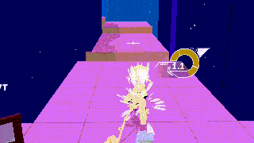
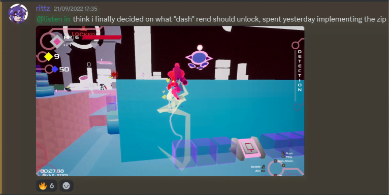

eventually i'll draw them all...
eventually i'll draw them all...
i first encountered rittz's stuff on his itch page (i can't remember how i found it)
at the time there was only blazing dynamo and death roll frenzy on there (i'll make reviews of the rest of the itch games later)
you have to try it out I'M BEGGING YOU
the amount of options you have at your disposal to get around the levels is incredible. you can really see that this is where rittz experimented and cooked his 3D platforming sauce. the animations, effects and sound design of everything bucket can do just screams polish and refinement. and there's a lot bucket can do.
and then there's everything else

but the coolest thing by far is the overheat system which powers it all. moving around will give you heat which can be used up to boost moves e.g you can double jump and dive twice as far. the hover also uses heat.
since building up heat takes time and using the boosted moves fully drains heat, this balances the powerful movement options better than a time-based system (*cough* yooka laylee *cough*).
it encourages using the entire moveset rather than waiting around to just use the overpowered stuff which is really smart
there was a discord linked on the itch page so i joined since i wanted to keep up with the cool stuff rittz was making i was immediately welcomed by rittz and everyone else!
there's really something special about seeing projects evolve over time
mini devlogs were posted quite regularly on the server which was really cool to see what was being worked on.  rittz tends to hop from project to project - at this time there was already prototype versions of goodnight sunlight, electrokinetic and radical avalanche!
we could chat with each other and with rittz about games, development and other stuff.
we could all get hyped together whenever rittz released something new, like stratospear and radical avalanche.
and of course, when pseudoregalia began development...


pseudoregalia won the metroidvania month game jam by a landslide.
i think that says a lot - rittz and matt did an amazing job in the time given.
the world has such a quality of dreaminess and mystique to it which is aided by its n64 artstyle
and even in this version the movement is super tight! the full release didn't need to add much more
while there is the classic ledge grab and plunge (ground pound), everything else is very special...
the slide jump is the evolution of blazing dynamo's, having a free-er arc and lower gravity.. i love how light yet powerful it feels with its gorgeous silhouette effects.
bright soul is much in the vain of blue fire where striking enemies keeps you in the air and refreshes abilities. it was a great idea there and it's just as great here.
cling gem is also very much like blue fire where you stick to a wall and slowly glide down along the wall. i like the weight you have and the stickiness on curved surfaces
but the wallkick...oughhhh

i genuinely consider the wallkick one of the most innovative movement abilities ever made. originally conceptualised in radical avalanche, it's been so well refined here. wall movement has essentially always been about getting onto the wall and sliding down or climbing up - the wallkick completely subverts this.
you're deflected from the wall depending on your angle of approach to the wall. once you understand how it works, this gives you an incredible amount of control: you can extend your jumps with shallow angles along the wall and climb up 90 degree corners by kicking perpendicular to each wall!
and all of the game feel is taken to the next level by the beautifully dynamic and clear animation! it really feels like the culmination of rittz's itch projects.
the design for sybil here is kinda goofy but i really like it.
performance was pretty bad though
i very much recommend playing it if you're interested in seeing the game's beginnings.
given the very positive response, more work was done on the game and made into a full release
the full release took the game jam version and polished it until it gleamed.
i was amazed how much more beautiful the new fog, skyboxes, textures and environment decoration made the game!
some upgrades were also given new names (bright soul -> ascendant light, wallkick -> sun greaves) and slide was separated from solar wind and strikebreak from soul cutter. mini upgrades called aspects were also added which i thought were a great addition. i think these changes definitely benefitted the pacing, especially with the AREA EXPANSIONS and TWO NEW AREAS
twilight theatre and listless library are so cool. one is a super fun massive platforming gauntlet and the other has such a cosy vibe which was a huge inspiration for the look of my shack!
the movement changes were really cool as well.
a backflip similar to mario's sideflip was added! however it was implemented in such an ingenious way - you flip higher at faster speeds. with the variety of way to get high momentum (sliding off ledges, jumping off moving platforms, solar wind), this is an incredible boon to the moveset
blazing dynamo's jet flip was added as a sunsetter copout which chains extremely well with kicks away from ledges, allowing for even more trick jumps
also you can throw and kick the dream breaker which is there purely just to look badass as fuck
although it does deal a good chunk of health from the BOSSES. yeah they added bosses.
strong eyes has a really cool design and has solid attacks but i thought it was a bit weird to have them at the start since it sets an expectation for more bosses and could present a roadblock or bad first impression for people who aren't fans of the combat.
princess is a really good boss though. i love the mix of projectile and melee attacks she has. it makes the fight super engaging, especially combined with music that goes so incredibly hard.
i'm so damn proud of the pseudoregalia modding community!
most unreal games never go beyond simple cosmetic mods but i think thanks to the knowledge i brought and other modder's hard work we've created such a robust set of frameworks.
initially for cosmetics i created wardrobe extender which procedurally edited the outfit datatables and save files. of course this wasn't exactly ideal since it required running an executable every time you installed a mod but it was far better than replacement.

then foehammer made an excellent overhaul of the attire ui which showed a preview of sybil in the outfit (the normal ui feels incomplete now). i realised we could finally get rid of wardrobe extender using this and suggested it! and so wardrobe extender is now deprecated, we have an awesome ui plus custom trail colours and weapons!
building on this idea of loading data assets through the asset registry, turncoda made the incredible pseudo menu! this makes creating custom campaigns so much easier by allowing them to set default upgrades, level names (which i helped to get correctly displayed) and load in as a separate save it also added more save slots and makes debugging SO MUCH EASIER with the customisable start points and upgrades.
i made a little ricco harbour port with stove using the framework but i need a lot of practice in level design. the best map which has come out by far is RedFlame's cozy citadel of death. and turncoda's schmoovement school is a fun little map too unfortunately there isn't too many more custom levels, just some time trials. i think due to how much work goes into a level, very little people are willing to make them which is a real shame. even when we made some really simple tools for a time trial jam, only me and coda ended up participating.
turncoda also popped off some more and added mod options which other mods can hook into.
and of course i made the randomiser with the bones of the blue fire rando. i ended up completely overhauling the seed generation to be even better when making it and now people can enjoy having even their chairs randomised! i've genuinely been blown away at all the positive feedback from it and am glad people enjoy it. *although i really should rewrite logic but i don't want to do it a fourth time*
littlemeowmeow even made an archipelago version of the randomiser with ue4ss! although it still needs updating to the map update...
quite predictably, the "map update" added a map to the game. i didn't even notice its absence thanks to strong landmarking and smaller area sizes compared to other metroidvanias however i can understand the complaint. people still complained about the lack of a player icon though. i think a 3D map like metroid prime would have worked better but i don't use it anyway.
time trials giving outfits were added which was a great addition! i adore the new outfits and the challenge of completing some of the trials was very welcome.
i really agree with the decision rittz made to nerf the hell out of ultra sliding. this was an exploit using the momentum from cancelling a slide on the ground to backflip and get insane height and speed. i have way more fun without it because it just cannibalises the rest of your movement - it effectively makes solar wind and sunsetter obsolete.
i actually helped in development for this update too! rittz must have interacted with some fields in the savegame asset accidentally, changing the name hashes and resulting in people losing save data. as a modder who knows way too much about unreal data serialisation i found the field hash inconsistencies and was able to fix the issue for rittz by hex editing the project assets!
also the performance improvements, bunny hop animation and extended castle sansa track were very much appreciated